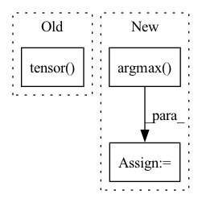

Pattern ID :3167
Before Change
tgt-arr, pred-arr: torch tensors
"""
if torch.equal(pred_tnsr.type(torch.long), tgt_tnsr):
return torch.tensor( 1)
else:
return torch.tensor(0)
def attention_weight_plotter(out_word, in_word, attention_array, save_path = ""):After Change
pred_tnsr: torch tensor :shp: (batch, seq_len)
tgt_tnsr: torch tensor :shp: (batch, voc_size, seq_len)
"""
pred_seq = torch.argmax( pred_tnsr, dim=1)
batch_sz = pred_seq.shape[0]
crt_cnt = 0
for i in range(batch_sz):
if torch.equal(pred_seq[i,:], tgt_tnsr[i, :]):In pattern: SUPERPATTERN
Frequency: 3
Non-data size: 3
Instances Fragment ID: 12116506
Project Name: ai4bharat/indiannlp-transliteration
Commit Name: 9beb7599f6abb477c840a068acbfa67501497019
Time: 2020-06-10
Author: josephgeobenjamin@gmail.com
File Name: utilities/running_utils.py
M Class Name: AnonimousClass
N Class Name: AnonimousClass
M Method Name: accuracy_score(2)
N Method Name: accuracy_score(2)
M Parent Class:
N Parent Class:
M File Name: utilities/running_utils.py
N File Name: utilities/running_utils.py
M Start Line: 38
M End Line: 42
N Start Line: 39
N End Line: 45
Before Change
// debugging/testing if arg passed
if verbose:
print("Negative phis:", phis_count)
return preds[torch.argmax(torch.tensor( phis_count) )]
def fix_mirrors_numpy(preds, N_mask, CA_mask, verbose=0):
Filters mirrors selecting the 1 with most N of negative phis.After Change
phis_count.append( (np.array(phis)<0).sum() )
idx = np.argmax( phis_count)
// debugging/testing if arg passed
if verbose:
print("Negative phis:", phis_count, "selected", idx)
return preds[idx], stresses[idx] Fragment ID: 12116508
Project Name: lucidrains/alphafold2
Commit Name: 98e16ad2931a27f90e05df940cff72c00074028d
Time: 2021-01-17
Author: ericalcaide1@gmail.com
File Name: utils.py
M Class Name: AnonimousClass
N Class Name: AnonimousClass
M Method Name: fix_mirrors_torch(5)
N Method Name: fix_mirrors_torch(4)
M Parent Class:
N Parent Class:
M File Name: utils.py
N File Name: utils.py
M Start Line: 283
M End Line: 297
N Start Line: 288
N End Line: 309
Before Change
inputs = [img / 255 for img in inputs] // normalize
t = torch.tensor( inputs, dtype=torch.float32)
t.unsqueeze_(0)
t = t.permute(1,0,2,3)
logging.debug(f"Tensor for prediction: {t.shape}")
After Change
with torch.no_grad():
pred = self.model(t.unsqueeze(0))
result = self.tokenizer.translate(pred.squeeze(0).argmax( 1) )
return result
Fragment ID: 12116503
Project Name: andreybicalho/vrpdr
Commit Name: daf497818875e24e9502e761bea83e6cbed1f909
Time: 2020-06-17
Author: andreybicalho@gmail.com
File Name: src/ocr.py
M Class Name: OCR
N Class Name: OCR
M Method Name: predict(2)
N Method Name: predict(2)
M Parent Class:
N Parent Class:
M File Name: src/ocr.py
N File Name: src/ocr.py
M Start Line: 36
M End Line: 53
N Start Line: 45
N End Line: 50